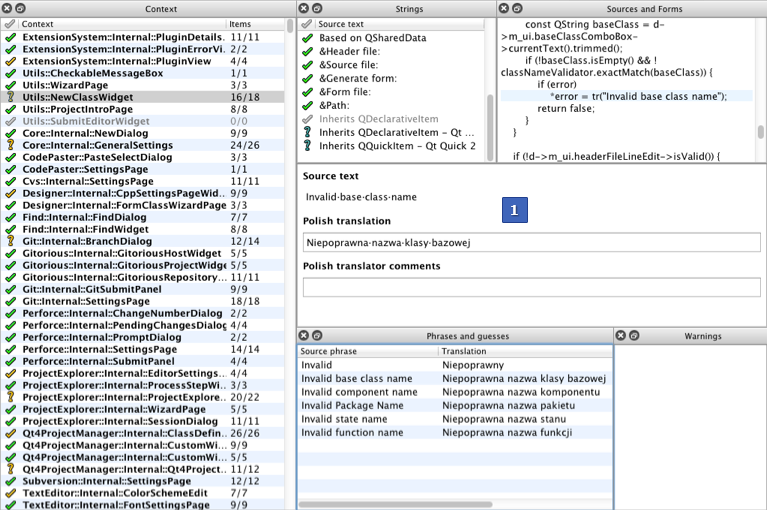

Qt Linguist user interface
The Qt Linguist main window contains a menu bar and the following views:
- Context (F6) lists translation contexts.
- Strings (F7) lists translatable strings in the selected context.
- Sources and Forms (F9) displays the selected string in the source code.
- Translation area displays the selected string and enables you to enter a translation for it.
- Phrases and guesses (F10) lists possible translations for the current string.
- Warnings (F8) lists translated strings that fail validation tests.

The translation area (1) is always visible. To show or hide the other views, select View > Views, or use keyboard shortcuts. You can drag the views by their title bars and arrange them around the translation area or even outside the main window.